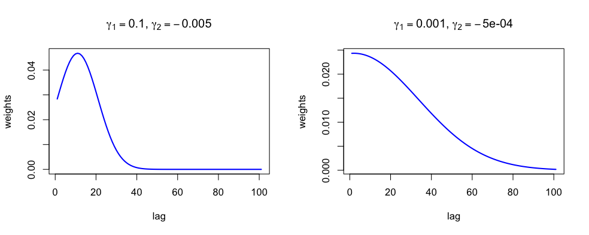
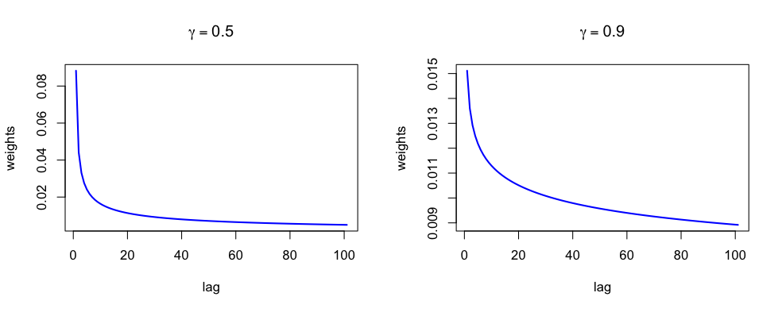
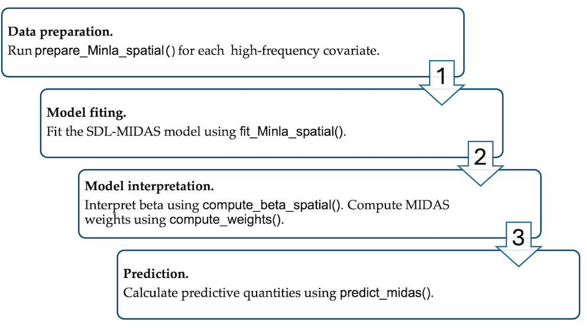
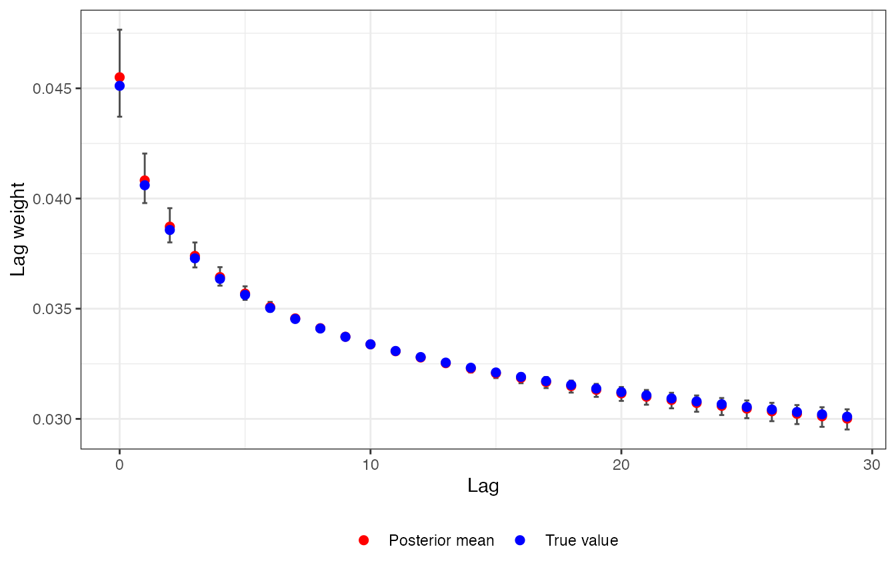
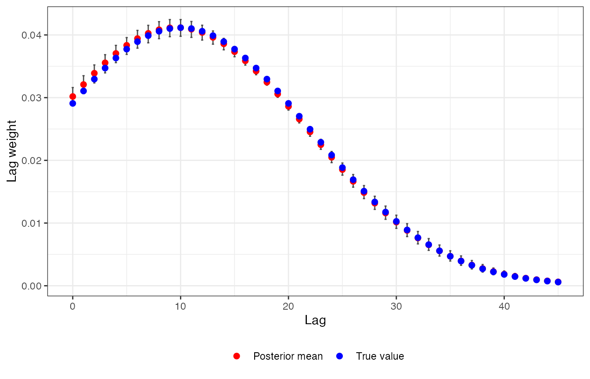
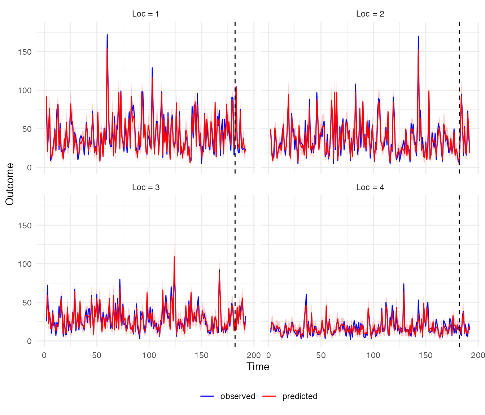

Getting started with midasINLA
midasINLA.RmdIntroduction
midasINLA provides tools for fitting mixed-frequency
time-series models using the Integrated Nested Laplace Approximation
(INLA) framework, with support for both constant and spatially varying
regression coefficients.
The package allows high-frequency covariates to be incorporated into a lower-frequency response model through MIDAS lag-weight functions. Different constraint schemes can be used to model the lag weights, while coefficients can be either constant or spatially varying.
Model
Consider a response variable , indexed by spatial unit and low-frequency time point . The predictor is observed at a higher frequency. The MIDAS framework relates the low-frequency response to multiple high-frequency observations through a weighted distributed lag:
Here, is the link function, is the intercept, and is the regression coefficient for the high-frequency predictor for the spatial unit. The function determines the MIDAS lag weights, where contains the parameters governing the shape of the weighting function. The weights are constrained to sum to one, which separates the overall magnitude of the predictor effect, represented by , from the relative contributions of the individual lags.
The index denotes the cumulative number of high-frequency observations up to low-frequency time point t,
where is the number of high-frequency observations associated with the low-frequency observation. In the examples below, the same high-frequency sampling structure is assumed across spatial units.
The main flexibility of the model comes from the choice of the lag-weight function . midasINLA provides functions for constructing different MIDAS weighting schemes and incorporating them into an INLA model, while allowing the regression coefficient to be either constant or spatially varying.
Spatially varying coefficients
midasINLA allows the regression coefficient to vary across spatial units in two ways:
- Spatially structured coefficient: where is the overall effect and represents the spatially structured deviation for unit . The deviations follow an intrinsic conditional autoregressive (iCAR) model with precision and spatial weights matrix , subject to the sum-to-zero constraint .
- Unstructured coefficient: where the coefficients are independent across spatial units.
A constant coefficient, , is also supported and corresponds to the special case in which the effect is the same across all spatial units.
Constraint functions
The lag weights are obtained by normalising a constraint function :
midasINLA implements several commonly used constraint functions.
- Exponential Almon polynomial (order 2):
where .
- Beta polynomial:
where
with a small fixed constant and . A one-parameter version is obtained by fixing .
- Hyperbolic scheme:
where .
- Gaussian kernel:
where and .
The shape of the lag-weight distribution depends on the constraint
function and its parameters. The following figures illustrate
representative weight profiles for the constraint functions implemented
in midasINLA.

Illustration of the MIDAS lag weights for exponential Almon polynomial constraint of order 2.

Illustration of the MIDAS lag weights for hyperbolic scheme polynomial constraint.
Implementation
The MIDAS lag structure is incorporated into the latent Gaussian
model through INLA’s rgeneric interface. The MIDAS
constraint functions define the lag weights as a function of a
low-dimensional parameter vector, while the resulting weighted
high-frequency covariates are represented as part of the latent
field.
The functions in midasINLA construct the required
rgeneric model components and interface them with
INLA::inla(). This allows the MIDAS lag-weight parameters
and regression coefficients to be estimated within the INLA framework,
while retaining the spatial structure specified for the regression
coefficients.
Users do not need to construct the rgeneric model
directly; this is handled internally by the package functions.
The general workflow for fitting and analysing an SDL-MIDAS model
using midasINLA is shown below:

General workflow.
The main functions are:
-
prepare_Minla_spatial() prepares high-frequency covariates for inclusion in the model; -
fit_Minla_spatial() fits the resulting model using INLA; -
compute_beta_spatial() obtains posterior summaries of the regression coefficients; -
compute_weights() obtains posterior summaries of the MIDAS lag weights; -
predict_midas() generates posterior predictions.
Simulated spatial Poisson example
We consider an outcome observed at 16 spatial locations and 192 time points. Two high-frequency covariates, and , are available for each location. There are 30 high-frequency observations corresponding to each response time point.
The first covariate uses a hyperbolic lag-weight constraint with and 29 lags. Its regression coefficient varies spatially according to an intrinsic conditional autoregressive (iCAR) model.
The second covariate uses a Gaussian lag-weight constraint with and and 45 lags. Its regression coefficient is constant across locations.
The data were generated using a Poisson model of the form
with
where follows an iCAR model. The true values of the parameters are , , and .
The simulated data are included with the package and can be loaded using:
data("data_spatialpoisson_example")The dataset is provided as a list containing the response, two high-frequency covariates, the spatial polygons, and the true parameter values used to generate the data. The available components can be inspected with:
names(data_spatialpoisson_example)
#> [1] "data_x1" "data_x2" "data_y" "weights1" "weights2" "eta"
#> [7] "beta0" "beta1" "beta2" "icar" "tau" "grid_sf"The response data are stored in data_y and contain the outcome together with the spatial and temporal indices:
head(data_spatialpoisson_example[["data_y"]])
#> y loc Time
#> 1 NA 1 1
#> 2 75 1 2
#> 3 21 1 3
#> 4 51 1 4
#> 5 63 1 5
#> 6 9 1 6The high-frequency covariates are stored in data_x1 and
data_x2. Each contains the covariate values together with
their corresponding spatial indices:
head(data_spatialpoisson_example$data_x1)
#> x1 loc Time
#> 1 5.42730258 1 1
#> 2 0.02233117 1 2
#> 3 0.56899585 1 3
#> 4 0.36948942 1 4
#> 5 2.36128703 1 5
#> 6 0.19844343 1 6
head(data_spatialpoisson_example$data_x2)
#> x2 loc Time
#> 1 -0.8913253 1 1
#> 2 0.8279532 1 2
#> 3 1.7493964 1 3
#> 4 0.1564567 1 4
#> 5 -1.3907526 1 5
#> 6 -0.1627427 1 6The neighbourhood structure used to generate the spatially varying
coefficient is stored as an inla.graph object. It can be
loaded from the package using:
g <- INLA::inla.read.graph(
filename = system.file("map.adj", package = "midasINLA")
)Preparing the MIDAS covariates
Before fitting the model, each high-frequency covariate is prepared
using prepare_Minla_spatial().
For the first covariate, we use the hyperbolic constraint and allow the coefficient to vary spatially according to an iCAR model:
Midas_x1 <- prepare_Minla_spatial(
x = data_spatialpoisson_example$data_x1$x1,
loc_x = data_spatialpoisson_example$data_x1$loc,
constraint = "hyperbolic",
K = 0:29,
m = 30,
svc = TRUE,
svc_prior = "icar",
g = g
)
Midas_x2 <- prepare_Minla_spatial(
x = data_spatialpoisson_example$data_x2$x2,
loc_x = data_spatialpoisson_example$data_x2$loc,
constraint = "gaussian",
K = 0:45,
m = 30,
svc = FALSE
)The resulting objects contain the information required by
fit_Minla_spatial() to construct the MIDAS components of
the model.
Fitting the model
The response data are stored in data_y. To illustrate prediction, we reserve the final 10 response time points at each location as a test set.
response_data <- data_spatialpoisson_example[["data_y"]]
response_data$y_all <- response_data$y
response_data[which(response_data[["Time"]] %in% 183:192),"y"] <- NAThe model can then be fitted using
fit_Minla_spatial():
fit_res <- fit_Minla_spatial(
formula = y ~ 1,
data = response_data,
loc_var = "loc",
time_var = "Time",
family = "poisson",
hf_input = list(Midas_x1, Midas_x2),
inla_options = list(
verbose = FALSE,
control.predictor = list(
compute = TRUE,
link = 1
)
)
)A summary of the fitted model can be obtained using the standard
summary() method:
summary(fit_res[["res"]])The fitted model contains two MIDAS components, corresponding to the
two high-frequency covariates. The model also estimates the spatially
varying coefficient associated with the first covariate. The parameters
governing the MIDAS lag-weight functions are reported with names
beginning with hf_idx_.
Posterior summaries of regression coefficients
Posterior summaries of the MIDAS regression coefficients can be
obtained using compute_beta_spatial().
beta_results <- compute_beta_spatial(
model = fit_res,
n_loc = 16
)The returned object contains results for each high-frequency covariate, including marginal distributions and posterior summaries.
For the first covariate, the posterior summaries of the spatially varying component can be accessed using:
beta_results$hf_index_1$summary.icar.beta
#> Mean SD 2.5% 50% 97.5%
#> b1 0.144625920 0.005026816 0.134579060 0.144553591 0.15434246
#> b2 0.136794201 0.005505744 0.125760927 0.137143194 0.14699417
#> b3 0.006091131 0.006039512 -0.005751688 0.006139525 0.01770044
#> b4 -0.223847710 0.007987181 -0.239855867 -0.223815892 -0.20750554
#> b5 0.137506207 0.005106865 0.127447858 0.137394699 0.14741294
#> b6 0.034293344 0.006037629 0.022064552 0.034654270 0.04623597
#> b7 -0.105033783 0.006542477 -0.118385444 -0.104944088 -0.09242093
#> b8 0.040220869 0.005921632 0.028546229 0.040366688 0.05239544
#> b9 0.124911910 0.005699686 0.113110204 0.124951457 0.13569821
#> b10 0.019733878 0.005964274 0.008134466 0.019734037 0.03136015
#> b11 -0.059292125 0.006897550 -0.072349123 -0.059145697 -0.04516908
#> b12 -0.170429731 0.007208214 -0.184599911 -0.170469520 -0.15620031
#> b13 -0.141316295 0.006822085 -0.154432690 -0.141202644 -0.12762342
#> b14 -0.132093150 0.007637109 -0.146832232 -0.132112566 -0.11719708
#> b15 -0.059319213 0.006492554 -0.072543068 -0.059513117 -0.04765402
#> b16 0.245836663 0.004890699 0.236812281 0.245597376 0.25593473The spatially varying coefficient at location is defined as
Posterior summaries of the resulting total coefficient can be accessed using:
beta_results$hf_index_1$summary.total.beta
#> Mean SD 2.5% 50% 97.5%
#> beta1 1.2456021 0.010206852 1.2248130 1.2456309 1.2654170
#> beta2 1.2380379 0.010937939 1.2161629 1.2384118 1.2589107
#> beta3 1.1075697 0.010952689 1.0856856 1.1079096 1.1286052
#> beta4 0.8773060 0.012509122 0.8532530 0.8775585 0.9014133
#> beta5 1.2390943 0.010069789 1.2187041 1.2393857 1.2588751
#> beta6 1.1353571 0.011006713 1.1138469 1.1351059 1.1568110
#> beta7 0.9965000 0.011102188 0.9741508 0.9962822 1.0176284
#> beta8 1.1413866 0.011093272 1.1190176 1.1410405 1.1624239
#> beta9 1.2264599 0.010263133 1.2071591 1.2263916 1.2458617
#> beta10 1.1210629 0.011494726 1.0979652 1.1211602 1.1443605
#> beta11 1.0419675 0.011707781 1.0185426 1.0416246 1.0647914
#> beta12 0.9307606 0.011492386 0.9088384 0.9305709 0.9530905
#> beta13 0.9600410 0.012184315 0.9349483 0.9602267 0.9841566
#> beta14 0.9694238 0.012141093 0.9464963 0.9692259 0.9945197
#> beta15 1.0416403 0.011158586 1.0189448 1.0415195 1.0640708
#> beta16 1.3472807 0.009909245 1.3278745 1.3473052 1.3664379For the second covariate, which has a constant regression coefficient, posterior summaries of are available using:
beta_results$hf_index_2$summary.beta
#> Mean SD 2.5% 50% 97.5%
#> beta -1.991549 0.02305254 -2.036627 -1.991615 -1.946129Estimating the MIDAS lag weights
The posterior distributions of the lag weights can be obtained using
compute_weights():
res_weights <- compute_weights(fit_res)The result is a list containing one data frame for each high-frequency covariate. Each data frame contains the lag, posterior mean, and lower and upper posterior quantiles.
For example, the estimated weights for the first covariate are:
head(res_weights$hf_1)
#> lag mean q2.5 q97.5
#> 1 0 0.04550320 0.04371408 0.04766043
#> 2 1 0.04082168 0.03979364 0.04204024
#> 3 2 0.03872292 0.03800923 0.03956152
#> 4 3 0.03739603 0.03687296 0.03800647
#> 5 4 0.03643514 0.03604624 0.03688603
#> 6 5 0.03568627 0.03539969 0.03601610The weights for the second covariate can be inspected similarly:
head(res_weights$hf_2)
#> lag mean q2.5 q97.5
#> 1 0 0.03018182 0.02873091 0.03160778
#> 2 1 0.03209143 0.03063139 0.03349881
#> 3 2 0.03389293 0.03234583 0.03521736
#> 4 3 0.03555531 0.03395167 0.03684984
#> 5 4 0.03704881 0.03558236 0.03833785
#> 6 5 0.03834579 0.03690312 0.03957650The posterior summaries can be used to visualise the estimated lag-weight functions. Because the data are simulated, the true lag weights are also available for comparison.
ggplot(res_weights$hf_1, aes(x = lag, y = mean)) +
geom_errorbar(
aes(
ymin = q2.5,
ymax = q97.5
),
width = 0.2,
colour = "grey30"
) +
geom_point(
aes(
colour = "Posterior mean"
),
size = 2
) +
geom_point(
aes(
y = data_spatialpoisson_example$weights1,
colour = "True value"
),
size = 2
) +
scale_colour_manual(
name = NULL,
values = c(
"Posterior mean" = "red",
"True value" = "blue"
)
) +
labs(
x = "Lag",
y = "Lag weight"
) +
theme_bw() +
theme(
legend.position = "bottom"
)
The corresponding lag-weight function for the second covariate can be visualised in the same way:
ggplot(res_weights$hf_2, aes(x = lag, y = mean)) +
geom_errorbar(
aes(
ymin = q2.5,
ymax = q97.5
),
width = 0.2,
colour = "grey30"
) +
geom_point(
aes(
colour = "Posterior mean"
),
size = 2
) +
geom_point(
aes(
y = data_spatialpoisson_example$weights2,
colour = "True value"
),
size = 2
) +
scale_colour_manual(
name = NULL,
values = c(
"Posterior mean" = "red",
"True value" = "blue"
)
) +
labs(
x = "Lag",
y = "Lag weight"
) +
theme_bw() +
theme(
legend.position = "bottom"
)
Prediction for held-out observations
The final 10 time points were withheld from the model fit and are used here to illustrate posterior prediction.
Posterior predictions can be generated using
predict_midas():
pred_res <- predict_midas(
model = fit_res,
family = "poisson",
Ntrials = NULL,
nsamples = 1000
)The returned object contains posterior summaries of the predicted outcome, including posterior means and 95% credible intervals, as well as posterior samples of the latent predictor.
The posterior summaries of the predicted outcome can be accessed using:
head(pred_res$computed_y$mean)
#> [1] 92.129 20.611 54.692 76.626 14.775 11.992
head(pred_res$computed_y$q2.5)
#> [1] 74 12 41 60 8 6
head(pred_res$computed_y$q97.5)
#> [1] 112.000 30.000 69.000 93.025 23.000 19.000The predicted and observed outcomes can also be compared graphically. The following example shows the results for the first four spatial locations. The dashed vertical line indicates the boundary between the training and held-out prediction periods.
plot_data <- data.frame(
observed = fit_res$data_final$y_all,
predicted = pred_res$computed_y$mean,
lower = pred_res$computed_y$q2.5,
upper = pred_res$computed_y$q97.5,
loc = fit_res$data_final$loc,
Time = fit_res$data_final$Time
)
plot_long <- plot_data |>
dplyr::filter(loc %in% 1:4) |>
tidyr::pivot_longer(
cols = c(observed, predicted),
names_to = "series",
values_to = "value"
)
# Determine the training/held-out boundary for each location
non_na <- !is.na(fit_res$data_final$y)
segment <- cumsum(
non_na != dplyr::lag(non_na, default = TRUE)
)
segment[!non_na] <- NA
rel_idx <- ave(
seq_along(non_na),
segment,
FUN = seq_along
)
first_na <- which(
diff(c(FALSE, is.na(fit_res$data_final$y))) == 1
)
vlines <- data.frame(
cut = rel_idx[first_na - 1] + 1,
loc = seq_len(16)
) |>
dplyr::filter(loc %in% 1:4)
ggplot(plot_long, aes(x = Time, y = value, colour = series)) +
geom_ribbon(
data = plot_data |>
dplyr::filter(loc %in% 1:4),
aes(
x = Time,
ymin = lower,
ymax = upper
),
inherit.aes = FALSE,
fill = "red",
alpha = 0.2
) +
geom_line() +
geom_vline(
data = vlines,
aes(xintercept = cut),
colour = "black",
linetype = "dashed"
) +
facet_wrap(
~loc,
ncol = 2,
labeller = labeller(
loc = function(x) paste("Loc =", x)
)
) +
scale_colour_manual(
values = c(
"observed" = "blue",
"predicted" = "red"
)
) +
labs(
x = "Time",
y = "Outcome",
colour = NULL
) +
theme_minimal() +
theme(
legend.position = "bottom"
)